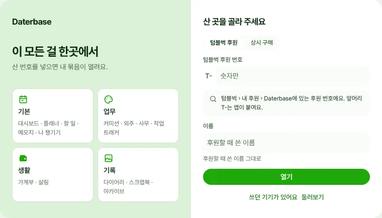
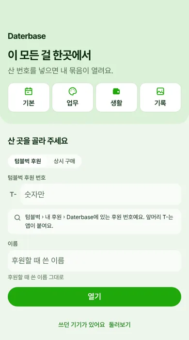

Daterbase 여는 법
받고, 산 번호를 넣으면 산 묶음이 열려요. 기기 5대까지 같은 번호로 열 수 있어요.
1. 앱 받기
윈도 PC는 프로그램으로, 폰·맥·태블릿은 웹 앱으로 써요. 기록은 기기끼리 이어져요.
PC에서 'Windows의 PC 보호' 창이 뜨면 받기 화면의 그림대로 두 번 누르면 돼요.2. 첫 화면에서 번호 넣기
- 1
산 곳을 골라요. 텀블벅에서 후원했으면 '텀블벅 후원'이에요.
- 2
번호와 이름을 넣고 '열기'를 눌러요. 번호 앞 영어 글자(T- 같은 것)는 앱이 붙이니 숫자만 넣어요.
- 3
열리면 산 묶음 칸에 테두리가 생겨요. '다음'에서 묶음마다 어떤 기능이 있는지 둘러볼 수 있어요.

PC 첫 화면
폰 첫 화면3. 번호 찾는 곳
텀블벅에서 후원했다면
텀블벅 후원현황에서 Daterbase 후원의 후원번호예요. 이름은 후원할 때 쓴 이름 그대로 넣어 주세요.
펀딩이 끝나고 후원 목록이 올라가는 12월 8일부터 열려요. 그 전에 넣으면 '확인 중'으로 기억해 두었다가, 그날 앱을 켤 때 저절로 열려요.
안 열릴 때
- 1
번호와 이름을 다시 봐 주세요. 산 곳에 적은 그대로여야 해요.
- 2
'기기 5대가 이미 등록돼 있어요'가 뜨면, 쓰던 기기의 설정 › 구매한 기능 › 등록한 기기에서 안 쓰는 기기를 빼 주세요.
- 3
그래도 안 되면 앱 안 '제보 · 문의'로 알려 주세요.